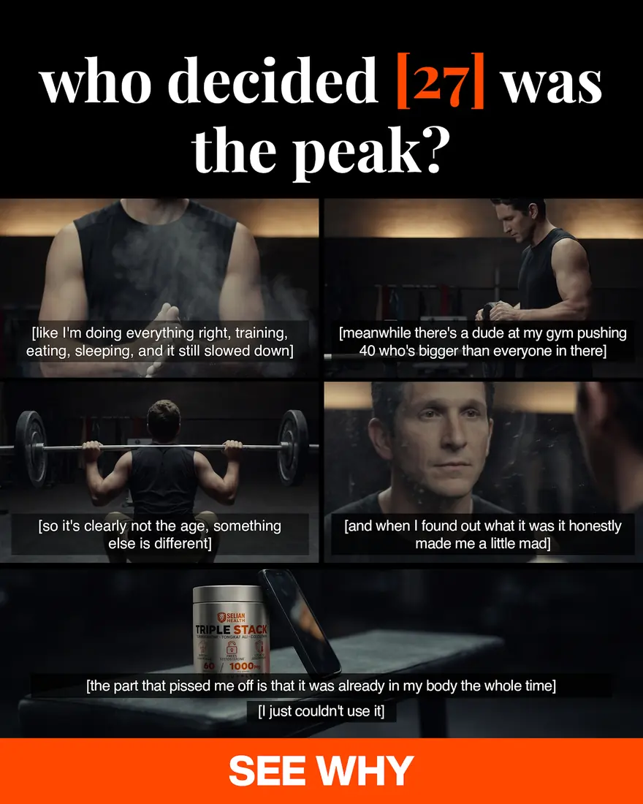
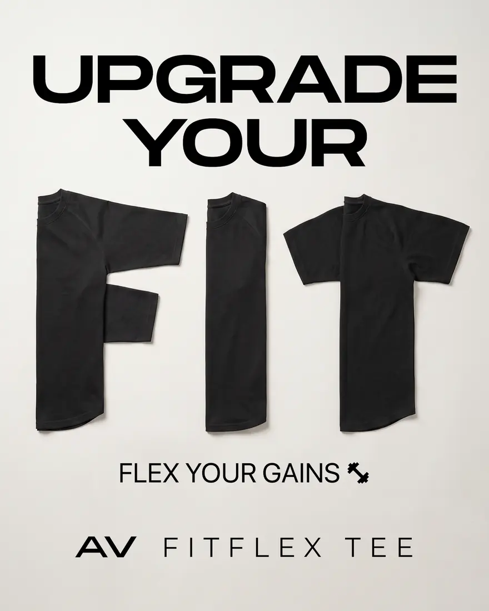
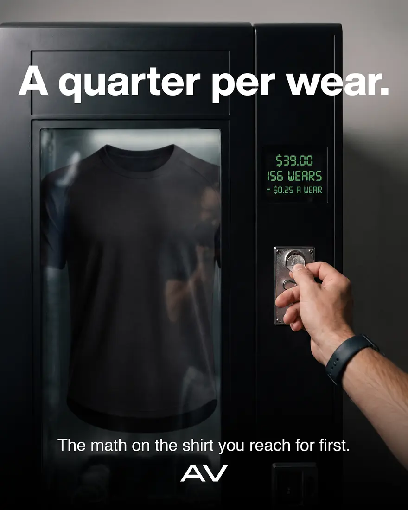
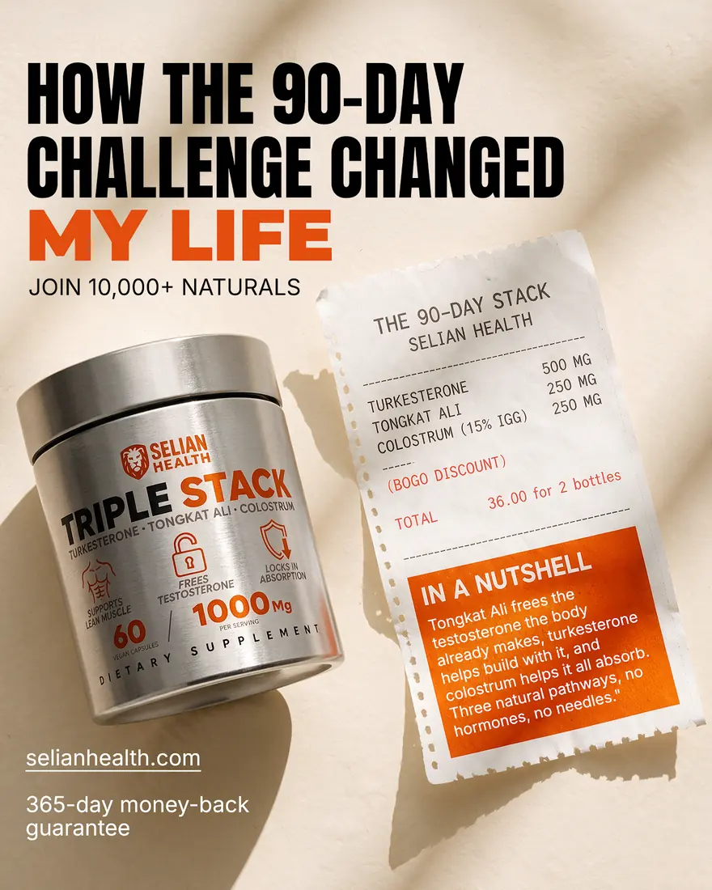
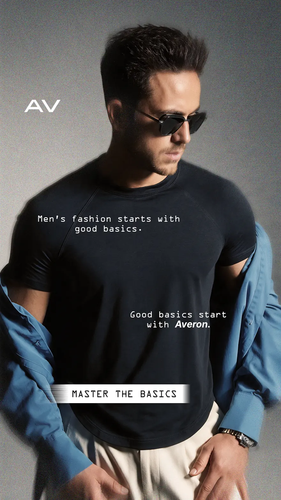
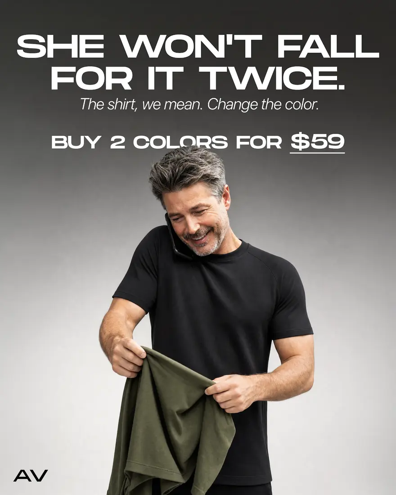
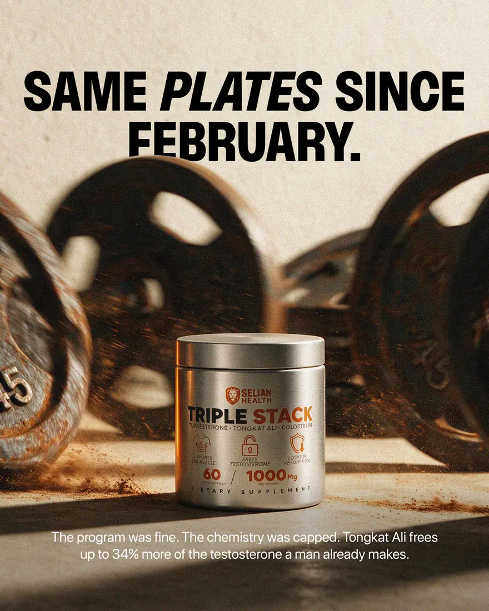

I make the whole ad for DTC brands.
I figure out the angle, write the script, cut the video, design the statics — then look at what the numbers did and make the next batch better. Can work in different languages too.
Everything I know came from actually working with clients.
- FormatsAI · UGC · VSL · Static
- MarketsUS · UK · NO · SE
- Ad accountsUSD · GBP · SEK
- Learned fromClients, then YT
- AlsoEcom Talent, Evolve
I run the whole creative for DTC brands — AI ads, UGC, VSLs, product ads, image ads. Been at it over two years with brands, creators and agency owners, mostly fashion, supplements, apparel, skincare, footwear and spa/wellness.
Then studying — YouTube, plus Ecom Talent and Evolve. Not the other way round.
Brands, dropshippers and creators — mostly US and UK.
- Taos
- Dose
- Royal Canadian
- Southwind Apparel
- Motion
- Serenity Studio
- FabuLove
- Cloudly Footwear
& agencies, UGC creators, dropshippers, spa and studio owners.
The range matters less than the pattern.
US & UK is where most of the work sits. One brand run in Norwegian; campaigns shipped in Swedish, inside SEK ad accounts.
Watch it first. Then open the folders.
AI-gen video
Scroll
-
AI b-rollGenerated product motion -
FitflexGenerated creator, on location -
AI creatorApparel, shot as UGC -
AI creatorFit and sizing demo -
AI sceneCloset angle, generated -
NorviaLive action + animation
Silent six-second cuts. Real-looking creators and full ads, generated start to finish.
Open the AI-gen folderUGC & VSL video
Scroll
-
TaosFootwear -
DoseSupplements -
Royal CanadianFootwear -
Southwind ApparelApparel -
Serenity StudioSpa & studio -
FabuLoveJewellery -
Cloudly FootwearFootwear -
MotionService
Silent six-second cuts. Creator edits, product ads and mashups — made to feel native, not like an ad.
Open the video folderSelected statics
Scroll
-

Selian HealthThe peak myth -

AveronUpgrade your fit -
Selian HealthThis is not TRT -
Serenity StudioMonthly skin ritual -

AveronA quarter per wear -

Selian Health90-day challenge -

AveronMaster the basics -
Serenity StudioNot a content studio -
Selian HealthIngredient callouts -

AveronWon’t fall for it twice -

Selian HealthSame plates
Image ads, callouts, before/afters, comparison charts, thumbnails.
Open the statics folderWhat it did.
Seven things, and the last one is the difference.
AI gen
Real-looking creators, full ads, generated start to finish.
Strategy
Dig through reviews and competitor ads, find the angle, write the brief, plan what to test.
Scripts
UGC scripts, VSLs, hooks, CTAs. Written for one type of person, not everyone.
Video
UGC edits, product ads, mashups, motion, captions, sound. Made to feel native, not like an ad.
Statics
Image ads, callouts, before/afters, comparison charts, thumbnails.
Managing it
Briefing creators, handling revisions, keeping fresh creative going into the account so nothing goes stale.
Keeping it clean
Creative trackers, naming conventions, a log of every ad with its angle, hook, spend and result. Your ad account stops being a mess and you can actually see what's working.
Easiest thing — just message me.
Tell me the brand, the offer and what you've already tried. We get on a call and I'll tell you straight whether I'm the right person for it.